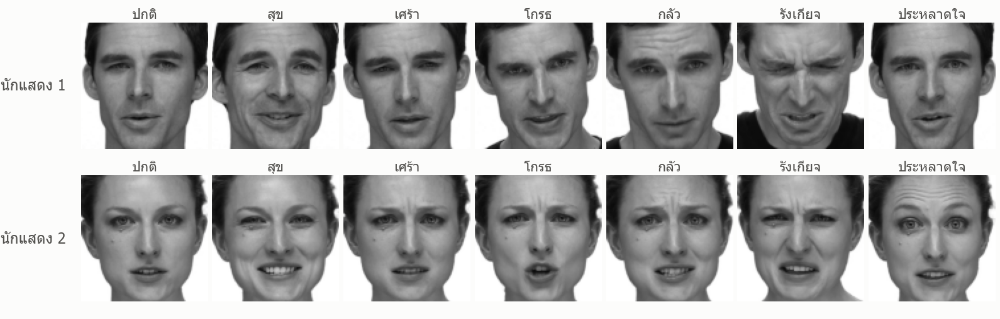
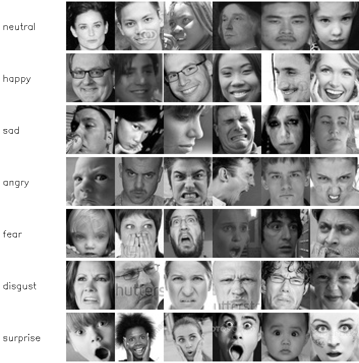

Face branch v2: ของเราเทียบกับของเดิมบน main
ThaiSLM · 15 พ.ย. 2026 · branch pitty · model models/face-model-ravhead-v1 · code modules/face_fer.py · ต่อจาก face-report-v1
สรุป — บน main ป้ายสีหน้ามาจาก EfficientNet-B0 v1 ของเพื่อน (เทรนบน FER2013) ซึ่งขึ้น "ปกติ" เกือบตลอด เราเปลี่ยนเฉพาะ
โมเดลภาพ
เป็น HSEmotion B2 + ตัวตัดสินที่เทรนบน RAVDESS (+ ตัวจับขมวดคิ้ว) ส่วนโมเดล blendshape ของเพื่อนและกฎการรวมใช้เหมือนเดิม
วัดด้วยวิธีเดียวกันทุกตัว (RAVDESS 24 นักแสดง, คะแนนจากคนที่ไม่เคยเห็น):
- ป้ายบนจอ (ภาพอย่างเดียว): 0.417 → 0.723 · เทียบ blendshape ของเพื่อนที่เทรนบน RAVDESS เหมือนกัน 0.591
- ทั้งระบบ (ภาพ + blendshape): 0.582 → 0.732 · อารมณ์ของเสียง 0.382 → 0.658
- คลิปทีม: ขึ้นอารมณ์ผิดบนหน้าปกติ 6.6% → 3.9% แต่ยิ้มบางๆ จับได้น้อยลง (2/3 → 0/3)
- บน FER2013 ของเพื่อนชนะ (0.664 เทียบกับ 0.493) แต่งานจริงเป็นวิดีโอคนทำภาษามือ ซึ่งใกล้ RAVDESS มากกว่า
1. ของเดิมและสิ่งที่เปลี่ยน
แอปใช้ใบหน้า 3 ทาง: (1) ป้ายบนจอ (/v1/face) ใช้โมเดลภาพอย่างเดียว · (2) อารมณ์ทั้งประโยค ใช้โมเดล blendshape
· (3) อารมณ์ของเสียง (speech_affect) เฉลี่ยความน่าจะเป็นจากภาพกับ blendshape อย่างละครึ่ง แล้วออกเสียงอารมณ์เฉพาะเมื่ออารมณ์ที่ไม่ใช่ปกติอยู่บนสุดและ ≥ 0.5
| main (เพื่อน) | ของเรา |
|---|
| โมเดลภาพ | EfficientNet-B0 v1 (models/face-model-efficientnetb0-v1): เริ่มจาก ImageNet เทรนทั้งตัวบน FER2013 (รูปนิ่ง 48px), prior หน้าปกติ 0.6 |
HSEmotion B2 (เทรนมาแล้วบน AffectNet, ไม่แก้) ดึงฟีเจอร์ 1,408 ตัว + v2-ferplus (EfficientNet-B0 ที่เราเทรนบน FER+) → ตัวตัดสิน (logistic regression)
เทรนบน RAVDESS + หน้าปกติจากคลิปภาษามือ ดูทีละช่วง 2 วินาที, prior หน้าปกติ 0.5 (models/face-model-ravhead-v1) |
| ตัวจับขมวดคิ้ว | – | วัดความสูงคิ้วด้านในเทียบกับคิ้วตอนพักของคนนั้นเอง ดันป้ายไปทางโกรธเมื่อขมวดคิ้ว (ป้ายบนจอเท่านั้น เพราะคิ้วต่ำเป็นไวยากรณ์คำถาม wh ด้วย) |
| blendshape | โมเดลของเพื่อน (models/face-model) เหมือนกันทั้งสองฝั่ง ไม่ได้แก้ |
| การรวมเป็นเสียง | ภาพ 0.5 + blendshape 0.5 เหมือนกันทั้งสองฝั่ง |
2. ข้อมูลที่ใช้
| ชุดข้อมูล | ใช้ทำอะไร | จำนวน | ป้าย |
|---|
| RAVDESS (วิดีโอพูด, นักแสดง 24 คน) | เทรน + ทดสอบ (leave-actors-out) |
1,440 คลิป → 4,630 ตัวอย่าง (คลิป + หน้าต่าง 2 วิ) · ภาพหน้า 27,145 ภาพ |
ปกติ 288 (รวม calm), อารมณ์อื่นอย่างละ 192 |
คลิปท่าพจนานุกรม (data_test/jack_test) | เทรน (หน้าปกติขณะทำภาษามือ) |
53 คลิป → ภาพหน้า 653 ภาพ → 120 ตัวอย่าง | ปกติทั้งหมด |
| FER2013 test (ของเพื่อน) | ทดสอบอย่างเดียว (หัวข้อ 7) | 7,178 รูป 48×48 | 7 อารมณ์ |
| คลิปของทีม (Boom, Jack, Pitty) | ทดสอบอย่างเดียว |
18 คลิป → 356 เฟรม (ทุก 0.5 วิ) |
ตัดสินด้วยตา: ปกติ 256 · ยิ้ม 3 · กำกวม 55 · มือบัง/ไม่ชัด 42 |
อารมณ์ใน RAVDESS
RAVDESS มี 8 อารมณ์ ส่วนระบบเรา (และ FER2013) ใช้ 7 อารมณ์
| RAVDESS | ระบบเรา |
|---|
| neutral | ปกติ |
| calm (สงบ) | รวมเข้าปกติ |
| happy | สุข |
| sad | เศร้า |
| angry | โกรธ |
| fearful | กลัว |
| disgust | รังเกียจ |
| surprised | ประหลาดใจ |
ภาพคือสิ่งที่โมเดลของเราเห็นจริง: ครอปหน้าสีเทา 96×96 px จากกรอบที่คำนวณจาก 68 จุดของ MediaPipe (ตัวเดียวกับบนเว็บ)
RAVDESS: 7 อารมณ์ (ระดับเข้ม) ของนักแสดง 2 คน

FER2013: ข้อมูลที่ B0 v1 ของเพื่อนเทรนและทดสอบ (รูปจากชุด test)

คลิปท่าพจนานุกรม: หน้าปกติขณะทำภาษามือ (ตัวอย่างที่เติมตอนเทรน)

คลิปของทีม: ชุดทดสอบคนทำภาษามือ

RAVDESS หน้าตรง แสงสตูดิโอ แสดงอารมณ์ชัด · FER2013 รูปนิ่งเล็กจากเน็ต · คลิปของทีมเป็นเว็บแคม ยิ้มบางๆ ปากขยับตามคำ และมือบังหน้า
3. วิธีวัดผล (เหมือนของเพื่อน)
- RAVDESS วิดีโอพูด 24 นักแสดง × 60 คลิป = 1440 คลิป, ป้ายจากชื่อไฟล์, calm รวมเป็นปกติ → 7 อารมณ์
- ตัวอย่าง = ทั้งคลิป + หน้าต่าง 2 วินาที (เลื่อนทีละ 1 วิ), ดึงจุดหน้า/blendshape 10 fps และภาพหน้า 5 fps ด้วย MediaPipe Holistic ตัวเดียวกับระบบ
- leave-actors-out 6 กลุ่ม (
actors[i::6]) เหมือนที่เพื่อนใช้กับ blendshape: เทรนบน 20 คน ทดสอบบน 4 คนที่ไม่เคยเห็น วนจนครบ
- ตรวจว่าวัดตรงจริง: รัน blendshape ของเพื่อนซ้ำได้ accuracy 0.592 ตรงกับรายงาน v9 ของเขา (0.592); B0 v1 บน FER2013 test ได้ 0.681 ตรงกับ model card ของเพื่อน (0.681)
4. ผลบน RAVDESS: แต่ละโมเดลเดี่ยว
| โมเดล | accuracy คลิป | macro-F1 คลิป | macro-F1 หน้าต่าง 2 วิ | acc ระดับเข้ม | ปกติ vs มีอารมณ์ | บวก/ลบ ตรง |
|---|
| เพื่อน: EfficientNet-B0 v1 (ภาพ, บน main) | 0.451 | 0.417 | 0.416 | 0.466 | 0.652 | 0.593 |
| เพื่อน: blendshape ตัวที่ใช้จริง a | 0.564 | 0.567 | 0.554 | 0.631 | 0.812 | 0.685 |
| เพื่อน: blendshape รันซ้ำด้วยวิธีเดียวกัน | 0.592 | 0.591 | 0.578 | 0.664 | 0.853 | 0.719 |
| ของเรา: B2 + หัว RAVDESS (ภาพ, ใช้บนเว็บ) | 0.726 | 0.723 | 0.705 | 0.786 | 0.874 | 0.799 |
ตัวหนาสีน้ำเงิน = ดีที่สุดในคอลัมน์ · a จาก models/face-model/model_card.json (CV ของเพื่อนเอง, วิธีเดียวกัน, มี 720 ตัวอย่างภาษามือที่ไม่มีในเครื่องนี้)
· B0 v1 ไม่เคยเห็น RAVDESS (เทรนบน FER2013) จึงเสียเปรียบเรื่องสภาพการถ่าย; การเทียบที่ยุติธรรมที่สุดคือกับ blendshape ซึ่งเทรนและทดสอบบน RAVDESS แบบเดียวกับเรา
recall แยกอารมณ์ (ระดับคลิป)
| recall | ปกติ | สุข | เศร้า | โกรธ | กลัว | รังเกียจ | ประหลาดใจ |
|---|
| เพื่อน: B0 v1 | 0.96 | 0.67 | 0.18 | 0.24 | 0.25 | 0.35 | 0.26 |
| เพื่อน: blendshape | 0.57 | 0.78 | 0.52 | 0.63 | 0.53 | 0.61 | 0.52 |
| ของเรา | 0.81 | 0.88 | 0.59 | 0.73 | 0.64 | 0.91 | 0.48 |
B0 v1 ตอบหน้าปกติเกือบทุกครั้ง (0.96) จึงจับเศร้า 0.18 โกรธ 0.24 ได้น้อย ·
ของเราดีกว่า blendshape ทุกอารมณ์ ยกเว้นประหลาดใจ (0.48 เทียบกับ 0.52)
5. ทั้งระบบแบบที่แอปรวมจริง
| ทั้งระบบ (ภาพ 0.5 + blendshape 0.5) | macro-F1 คลิป | accuracy คลิป | ปกติ vs มีอารมณ์ | ปกติ | สุข | เศร้า | โกรธ | กลัว | รังเกียจ | ประหลาดใจ |
|---|
| main (เพื่อน): B0 v1 + blendshape | 0.582 | 0.596 | 0.778 | 0.92 | 0.78 | 0.34 | 0.53 | 0.46 | 0.60 | 0.38 |
| → อารมณ์ของเสียง | 0.382 | 0.407 | 0.435 | 0.97 | 0.59 | 0.06 | 0.30 | 0.09 | 0.35 | 0.20 |
| ของเรา: B2 + หัว RAVDESS + blendshape | 0.732 | 0.734 | 0.885 | 0.79 | 0.86 | 0.59 | 0.76 | 0.67 | 0.91 | 0.54 |
| → อารมณ์ของเสียง | 0.658 | 0.642 | 0.696 | 0.93 | 0.78 | 0.40 | 0.60 | 0.51 | 0.78 | 0.36 |
fuse24.py · ภาพสรุปต่อตัวอย่างแบบ FaceBranch._summary (ถ่วงด้วยความมั่นใจ × คุณภาพ); blendshape เทรนบน RAVDESS แบบ leave-actors-out ·
B0 v1 ดึงคะแนนของ blendshape ลง (0.591 → 0.582) ส่วนของเราดึงขึ้น · อารมณ์ของเสียงคิดแบบ speech_affect
(ปกติ เว้นแต่อารมณ์อื่นอยู่บนสุดและ ≥ 0.5) · ลองน้ำหนักภาพ 0–1 แล้ว (voice_weight.py) คงไว้ 0.5 เท่าเดิม: บนคลิปทีมไม่ออกเสียงอารมณ์ผิดบนหน้าปกติเลย (0/75 ช่วง)
6. คนทำภาษามือ (คลิปของทีม 18 คลิป)
ไม่มีป้ายอารมณ์จริง จึงใช้ชุดเดียวกับรายงาน v1 (real_check.py): ตัดสินด้วยตาว่าเป็นหน้าปกติ 256 เฟรม, ยิ้มชัด 3 เฟรม (ยิ้มบางๆ)
วัดว่าป้ายที่จะขึ้นบนจอ (ส่งทีละภาพแบบเว็บจริง) ขึ้นอารมณ์ผิดบนหน้าปกติบ่อยแค่ไหน
| ป้ายบนจอ (unknown rule + smoother แบบเว็บ) | ขึ้นหน้าปกติ | ขึ้นอารมณ์ผิด ↓ | ไม่แน่ใจ | ยิ้มที่จับได้ |
|---|
| เพื่อน: B0 v1 (prior 0.6) | 82.0% | 6.6% | 11.3% | 2/3 |
| ของเรา (prior 0.5) | 93.8% | 3.9% | 2.3% | 0/3 |
ของเราทักผิดน้อยกว่าและตอบ "ไม่แน่ใจ" น้อยกว่า แต่ยิ้มบางๆ จับไม่ได้ (ตัวอย่างแค่ 3 เฟรม น้อยเกินสรุป) · ชุดนี้บอกได้แค่ว่าทักผิดน้อย ไม่ได้บอกว่าจับอารมณ์จริงได้
· prior หน้าปกติ 0.5 เลือกจากการแลกกันระหว่าง F1 บน RAVDESS กับการทักผิดบนชุดนี้ (เปลี่ยนได้ที่ head.prior_shift ใน config.json)
7. เทียบสองทาง: บนข้อมูลของเพื่อนด้วย
| macro-F1 (accuracy) | FER2013 test: รูปนิ่ง 48px จากเน็ต (7,178 รูป) | RAVDESS 24 คน: วิดีโอนักแสดง |
|---|
| เพื่อน: B0 v1 (เทรนบน FER2013) | 0.664 (0.681) · ข้อมูลที่เทรนมา | 0.417 (0.451) · ไม่เคยเห็น |
| ของเรา (เทรนบน RAVDESS) | 0.493 (0.542) · ไม่เคยเห็น | 0.723 (0.726) · ข้อมูลที่เทรนมา (คนที่ไม่เคยเห็น) |
fer_cross.py · แต่ละตัวชนะบนข้อมูลแบบที่ตัวเองเทรนมา · ของเราบน FER2013 เสียเปรียบ: ต้องขยายรูป 48 → 96 px และตัดสินจากรูปเดียว (ไม่มีช่วง 2 วิ)
· ลองให้ตัวตัดสินเรียน FER2013 train ด้วย (fer_head.py) ได้สูงสุด 0.618 ยังแพ้ B0 v1 และทำให้ RAVDESS ลดลง จึงไม่ใช้
· blendshape วัดบน FER2013 ไม่ได้ (รูป 48 px เล็กเกินให้ MediaPipe หาจุดบนหน้า)
8. บนเว็บ
- หลังบ้านใช้
enet_b2_8_feat.onnx (B2 ที่คืนทั้ง logits และฟีเจอร์) ~220–350 ms ต่อการเรียก 5 ภาพบน CPU
- ตัวตัดสินเป็นเชิงเส้น จึงย่อแต่ละภาพเหลือ 21 ตัวเลข แล้วเก็บ 2 วินาทีล่าสุดใน state ที่ส่งไปกลับกับหน้าเว็บ (หลังบ้านไม่จำอะไร)
- ตรวจว่าผลบนเว็บ = ผลตอนวัด: ต่างกันสูงสุด 1.9e-08 (
check_ravhead.py)
- การแปลภาษามือไม่ถูกแตะ (face branch แยกและล้มได้โดยไม่กระทบ) · สลับกลับเป็นของเดิมได้ด้วย
FACE_FER_DIR=./models/face-model-efficientnetb0-v1
- ความเร็ว: หน้าต่าง Chrome ที่ถูกบังหรืออยู่ด้านหลังจะถูก Windows/Chrome ลดความถี่ (~1 fps) เมื่ออยู่ด้านหน้าได้ 20–22 fps (GPU Intel Iris Xe)
- test
tests/test_face_branch.py ผ่าน 12/12
9. ข้อจำกัด
- ยิ้มบางๆ ในคลิปทีม ของเราจับได้ 0/3 (B0 v1 2/3) ควรเก็บคลิปยิ้มของคนทำภาษามือเพิ่ม
- ประหลาดใจ / เลิกคิ้ว ยังอ่อน (recall ~0.5); การเลิกคิ้วเป็นไวยากรณ์คำถาม yes/no ด้วย
- RAVDESS เป็นนักแสดงพูดภาษาอังกฤษ หน้าตรง แสงดี; คะแนนจริงบนคนทำภาษามือจะต่ำกว่า และยังไม่มีชุดภาษามือไทยที่ติดป้ายอารมณ์
- ชุดคลิปภาษามือที่เพื่อนใช้ทดสอบ blendshape ไม่มีในเครื่องนี้ จึงเทียบบนชุดนั้นไม่ได้
- สัญญาอนุญาต: RAVDESS (CC BY-NC-SA 4.0) และน้ำหนัก HSEmotion ที่เทรนจาก AffectNet ใช้ได้เพื่อการวิจัย/การศึกษาเท่านั้น ห้ามใช้เชิงพาณิชย์
10. ไฟล์และการทำซ้ำ
| ไฟล์ | หน้าที่ |
|---|
Face-Lab/ravdess24.py · sign_neutral.py | ดึง RAVDESS 24 คน · ภาพหน้าปกติจากคลิปท่าพจนานุกรม |
Face-Lab/rav_head.py · rav_prior.py | เทรน/วัดตัวตัดสินของเรา และ blendshape ของเพื่อน · prior |
Face-Lab/check_ravhead.py · real_check.py | ตรวจ bundle + คลิปทีมแบบเว็บ |
Face-Lab/b0v1_24.py · fuse24.py · voice_weight.py | B0 v1 บน RAVDESS · ทั้งระบบแบบแอป · น้ำหนักภาพในเสียง |
Face-Lab/fer_cross.py · fer_head.py | บน FER2013 test · ลองเรียน FER2013 เพิ่ม |
Face-Lab/make_data_figures.py · make_report_v2.py | ภาพข้อมูลและรายงานนี้ (อ่านตัวเลขจาก results/*.json) |
modules/face_fer.py | PictureHead, BrowCue, กฎ wh ใน speech_affect |
รัน: docker compose -f docker-compose.yml -f docker-compose.cpu.yml up -d --build (ค่าตั้งต้นของ FACE_FER_DIR ชี้ models/face-model-ravhead-v1 แล้ว)
· การทดลองอื่นที่ไม่ได้ใช้ (ensemble, fine-tune B2 รอบ 8 ฯลฯ) อยู่ใน Face-Lab/ และ results/